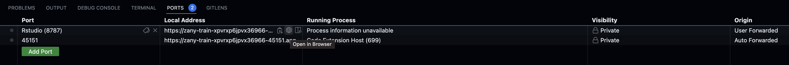

WARNING: this article is outdated (codespaces need to be re-designed since we decided to stop handling dependencies with renv) - WIP
Introduction
This article will go over the following:
- What are codespaces, why we are using it for Admiral, and how to use them.
- How codespaces are built (this section concerns more admiralci developers to be able to maintain codespaces - it’s not needed to use codespaces, but interesting for users that want to learn more about admiral CI/CD processes).
Go here to watch codespaces demo !
What are codespaces and how to use them
What are codespaces, and why are we using it for Admiral ?
Codespaces are development environments hosted in the cloud. These
environment are running on virtual machines and can be customized. For
admiral we setup custom codespaces with all admiral
dependencies installed (system dependencies, renv.lock files packages,
staged dependencies from staged_dependencies.yaml file).
Then every contributors of admiral can use these codespaces and run
Rstudio in their web browsers as a development environment, without
having to install locally every dependencies, and without any
compatibility problem with their local machines / operating system.
How to use codespaces
Create a codespace
On the main repository, go under <> Code menu
-> Codespaces -> ... ->
+ New with options.
Then this menu will appear :
Go under Dev container configuration drop-down menu, and
select the codespaces wished (you can choose between several R
versions). Note: Pressing directly + button will
automatically create codespace for the latest R version available
(4.2).
Accessing Rstudio
To open rstudio in your browser, type rstudio on your
current terminal. This script will wait until rstudio server is ready,
and display the url in the terminal.
Known issue:
Sometimes ports are not automatically forwarded at the codespace creation. If you have some problems trying to access rstudio url, check the PORTS section on vscode :

If you don’t see 8787 port, then you need to manually
add it (using “Add Port” button).
Usage limit / Pricing
The following storage and core hours of usage are included, free of charge, for personal accounts:
- GitHub Free for personal accounts:
- Storage per month:15 GB
- Core hours per month: 120
- GitHub Pro:
- Storage per month:20 GB
- Core hours per month: 180
For more details, see the github codespaces billing
Codespaces building process (for admiralci developers)
Base docker image
Our codespaces are using a base docker image. These image is located
inside admiralci
container registry. Admiral is configured to be used with several
versions of R. These versions are defined under
renv/profiles folder (with an associated
renv.lock file). Therefore, there is a docker image
available for each R_VERSION named
admiralci-{R_VERSION}. Note that the building step for
these images is described here. There is a codespace
configuration available for each R_VERSION, based on its
associated docker image admiralci-{R_VERSION}.
.devcontainer.json files
Codespaces configuration are defined under
.devcontainer.json files (inside .devcontainer
folder). There is a .devcontainer.json file defined for
each R version. Every json fields are described here : https://containers.dev/implementors/json_reference/.
In our case we are using following configuration:
name: Name of the devcontainer displayed in the web browserimage: Base docker image for the codespace (in our case ghcr admiralci based image)features: (see https://github.com/rocker-org/devcontainer-features for every available features for rocker containers). We use r-rig feature to install R and some dependencies + vscode requirements.customizations: used to customize IDE (vscode) settings.forwardPorts/portsAttributes: Rstudio ports configuration.updateContentCommand: used to run staged.dependencies installation (for more details see staged dependencies doc)postCreateCommand: command launched after the container creation (in our case we activate the proper R profile fromrenv/profilesfolder).Note that Commands
postCreateCommand,updateContentCommand(and alsoonCreateCommandbut not used here) are always run to finalize container setup. they are run in this following order :onCreateCommand>updateContentCommand>postCreateCommand.
Prebuild codespaces
In settings -> codespaces, you can see “Set up prebuild”. This
feature allow to prebuild codespaces to be able to speed up users
codespaces creation. On the main configuration menu, the branch
containing codespaces has to be selected, and there is a drop-down menu
where an user can select one of the .devcontainer.json configuration.
There is also the “prebuild triggers” menu to configure when to run a
prebuild for a given .devcontainer.json file. For every
admiralci codespace we choose the “On configuration change”
trigger.
Then when a user is creating a codespace, he will see this message “prebuild ready” - it will speed-up the codespace creation.
Propagation
Each time a change is detected inside .devcontainer folder, the propagation job will be triggered.